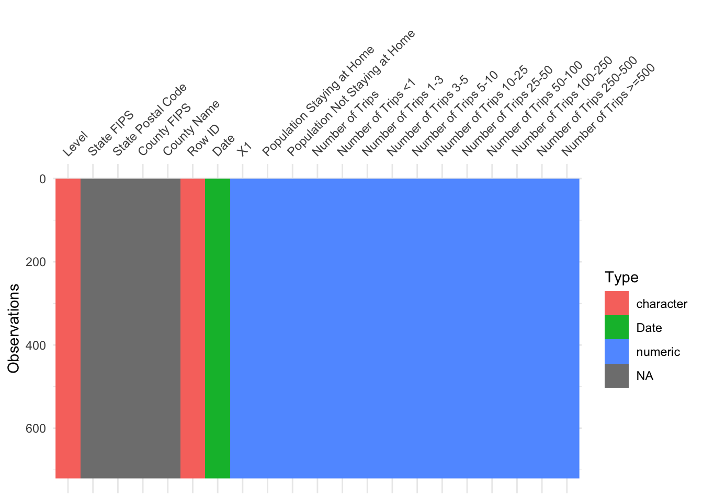

Chapter 2 Data sources
Our project uses three datasets: Trips by Distance, Transportation, and COVID-19 statistics.
The first two datasets are published by U.S. Department of Tranportation, Bureau of Transportation Statistics. The third one is from the covid19.analytics Package. For each dataset, we present a graphs using visdat package(visdat) to visualize the columns and datatypes within the dataset.
2.1 Dataset 1: Trips by distance
The Trips by distance dataset is from Link. The travel statistics are produced from an anonymized national panel of mobile device data from multiple sources. All data sources used in the creation of the metrics contain no personal information.
The dataset has 2,609,498 observations and 20 columns. It provides insights about the number of people staying at home, not staying at home, and how many trips are made with different miles at national, state and county level on a daily basis. Trips are defined as movements that include a stay of longer than 10 minutes at an anonymized location away from home.
Below is the visualization of this dataset. The horizontal axis displays the columns in the data set and the vertical axis represents each observations. Different colors represent the datatype for the column.

The trip distances are divided into ten granular levels, for example, less than 1 mile, from 1 to 3 miles, and so on, until the distance above 500 miles. As we can see from above graph, columns contains the number of trips at the corresponding granular distance level, for example, Number of Trips <1 shows number of trips made by residents shorter than one mile. These columns have integer datatype. Level column shows if the observation is on national, state or county level. Column Date is a datetime type recording the exact date of the records.
The open datasets are available for downloading as a .csv file directly from the website. Then we directly read these csv files as dataframes in RStudio.
2.2 Dataset 2: Transportation
The Monthly Transportation Statistics dataset is from Link. The Bureau of Transportation Statistics brings together the latest data from across the Federal government and transportation industry. Monthly Transportation Statistics contains over 50 time series from nearly two dozen data sources.
Data provides insights about population using different traffic methods at monthly scale. For example, how many people take airplanes in each month. The dataset contains data both before and after the COVID-19 pandemic. Since we want to explore how transportation methods usage are affected by COVID-19, we choose 10 months of data before and after the outbreak of COVID-19 respectively. Since subset of dataset can be chosen directly on the website and downloaded, we choose to include 20 observations, each indicating a month.
The dataset has 20 rows and 137 columns. One drawback is that there are too many columns and only a small subset of columns are to our interest of analyzing how COVID-19 pandemic affect mobility and transportation. Many such irrelevant columns are about transportation fatalities and government construction spending on all kinds of transportation systems. Therefore, when doing data analyze, we remove those tangent columns and select variables which are closely related to our topic of analysis.
Below is the visualization of the subset we took.

The majority of columns are of integer datatypes showing the number of people using various transportation methods, the number of fatalities per mile or construction spending on various transportation ways. The column Date is a date type.
The open datasets are available for downloading as a .csv file directly from the website. Then we directly read these csv files as dataframes in RStudio.
2.3 Dataset 3: COVID-19 statistics
The COVID-19 statistics dataset is from the covid19.analytics Package. It provides the time series worldwide data for COVID-19 virus from the JHU’s CCSE repository. For our study, we only select the subset of data where the country is the United States and it provide COVID-19 statistics in the state level.
Data provides information about the population of getting confirmed or dead due to COVID-19. The dataset has 3277 rows and 14 columns. Below is the visualization of this dataset.

As shown in the graph, the Confirmed and Deaths are integer datatypes, and these are the metrics that we used in our following study. Province_State is a character that indicates the state of the records.
The open datasets are available in covid19.analytics package and we can directly import the data from the package for further use.